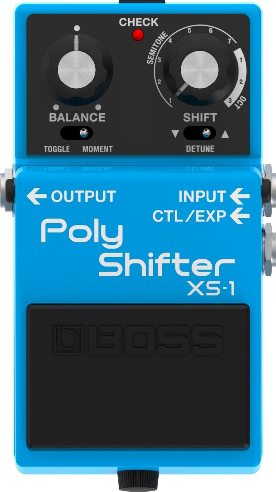
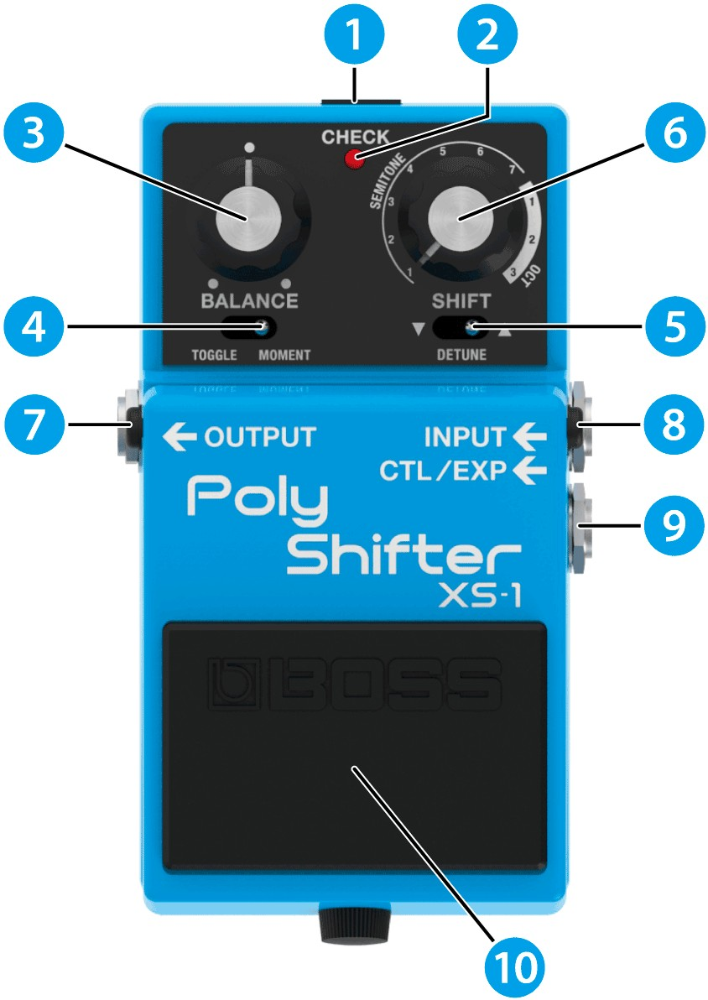
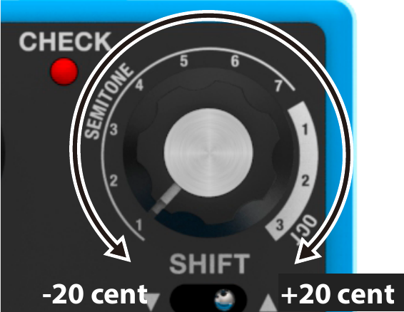
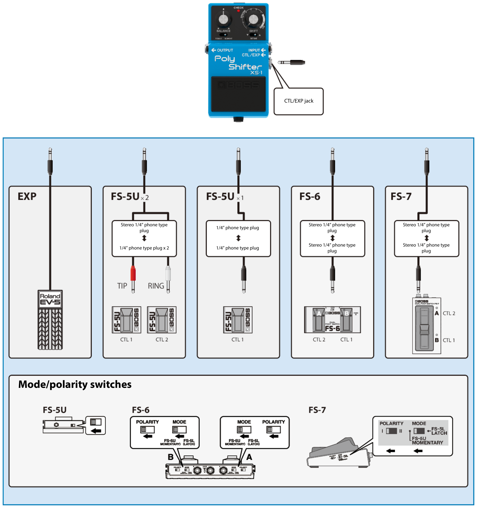
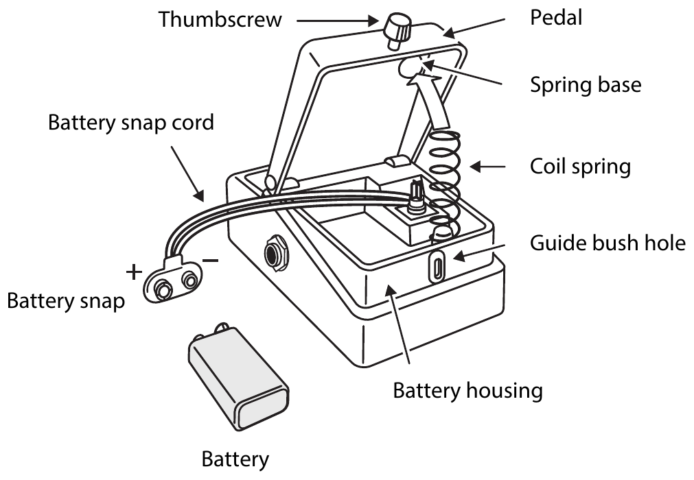

XS-1
Owner’s Manual

Before using this unit, carefully read “USING THE UNIT SAFELY” and “IMPORTANT NOTES” (the leaflet “USING THE UNIT SAFELY” and the Owner’s Manual). After reading, keep the document(s) where it will be available for immediate reference.
Panel descriptions
- To prevent malfunction and equipment failure, always turn down the volume, and turn off all the units before making any connections.

| Number | Name | Explanation |
|---|---|---|
| 1 | DC IN jack |
Use this jack to connect a separately sold AC adaptor (PSA-S series). By using an AC adaptor, you can play without being concerned about how much battery power you have left.
|
| 2 | CHECK indicator |
This indicator shows whether an effect is ON/OFF, and doubles as the Battery Check indicator. The indicator lights when an effect is ON. You can check whether the effect is on or off.
|
| 3 | [BALANCE] knob | Adjusts the balance between the effect sound and the direct sound. |
| 4 | PEDAL MODE [TOGGLE/MOMENT] switch |
Selects how the pedal switch operates. TOGGLE: The effect toggles between on and off with each press of the pedal. MOMENT: The effect turns on only while the pedal is pressed. |
| 5 | SHIFT DIRECTION [▼/DETUNE/▲] switch |
Sets the direction of pitch shift. ▼ (down): The pitch shifts down. DETUNE (center): Adds a detuned sound to the input audio. ▲ (up): The pitch shifts up. |
| 6 | [SHIFT] knob |
Adjusts the amount of pitch shift. SEMITONE: in semitones (1–7 half steps) OCT: in octaves (1–3 octaves) When the [SHIFT DIRECTION] switch is set to the middle (DETUNE), the range is -20 to +20 cents.  |
| 7 | OUTPUT jack |
Connect this jack to your amplifier or effect unit.
|
| 8 | INPUT jack |
Connect the output of your electric guitar, other musical instrument or effect unit to this input jack. Use a 1/4″ phone type (TS) ↔ 1/4″ phone type (TS) cable to connect to this jack.
|
| 9 | CTL/EXP jack |
Using the jack as a CTL jack Connect a footswitch (FS-5U, FS-6, FS-7; sold separately) to control the pitch shift. For more about the footswitch settings, refer to “Adjusting the amount of pitch shift”. Using the jack as an EXP jack Connect an expression pedal (EV-30, Roland EV-5, etc.; sold separately) to continuously change the effect settings for the expression pedal’s pushed-up (horizontal) position and for the pushed-down (slanted) position. For more on function settings, refer to “Controlling the knob using an expression pedal (EXP FUNCTION)”.
|
| 10 | Pedal switch | This switch turns the effect on/off. |
Turning the power on/off
- Once everything is properly connected, be sure to follow the procedure below to turn on their power. If you turn on equipment in the wrong order, you risk causing malfunction or equipment failure.
- Before turning the unit on/off, always be sure to turn the volume down. Even with the volume turned down, you might hear some sound when switching the unit on/off. However, this is normal and does not indicate a malfunction.
When turning the power on
- Connect a plug to the INPUT jack.
This turns this unit on.
- Turn on your guitar amp or other audio equipment.
When turning the power off
- Turn off your guitar amp or other audio equipment.
- Unplug the cable from the INPUT jack.
The power turns off.
Connecting an external pedal

Adjusting the amount of pitch shift
The pitch shift amount can be set separately for each externally connected footswitch.
- Press and hold the footswitch you want to set, and use the [SHIFT DIRECTION] switch to set the shift direction.
- Press and hold the footswitch you want to set, and turn the [SHIFT] knob to set the pitch shift amount.
- Press and hold the footswitch you want to set, and turn the [BALANCE] knob to set the balance between the effect sound and the direct sound.
- Press and hold the footswitch you want to set, and use the [TOGGLE/MOMENT] switch to set how the pedal works.
- The settings are saved when the footswitch is released.
- To reset the pitch shift amount of an externally connected footswitch to the same amount as the panel knob, press and hold the footswitch while pressing the pedal switch.
- The CHECK indicator blinks red when you set the pitch shift amount of an externally connected footswitch or reset the setting.
- The CHECK indicator lights green when the pedal switch and the externally connected footswitch (CTL1) have different pitch shift settings.
- The CHECK indicator lights orange when the pedal switch and the externally connected footswitch (CTL2) have different pitch shift settings.
Controlling the knob using an expression pedal (EXP FUNCTION)
You can use an externally connected expression pedal to control the pitch shift amount of this unit.
The pitch is shifted to the amount set with the [SHIFT] knob when you press the pedal.
Replacing the battery
About the battery
- Batteries should always be installed or replaced before connecting any other devices. This way, you can prevent malfunction and damage.
- If the batteries run extremely low, the sound may distort / interruptions in the sound may occur at high volume levels, but this does not indicate a malfunction. If this occurs, please replace the batteries / use the AC adaptor (sold separately).
- If operating this unit on batteries, please use alkaline batteries.
- If you handle batteries improperly, you risk explosion and fluid leakage. Make sure that you carefully observe all of the items related to batteries that are listed in “USING THE UNIT SAFELY” and “IMPORTANT NOTES” (leaflet “USING THE UNIT SAFELY” and Owner’s Manual).
- This device already contains a battery when shipped from the factory. This is a test battery, which may not last as long as a new one.
NOTE
- When operating on battery power only, the unit’s indicator will become dim when battery power gets too low. Replace the battery as soon as possible.
- If you notice noise when the unit is running on battery power, this may be because the battery is almost depleted. Try replacing the battery or using a separately sold AC adaptor.
- If the CHECK indicator keeps switching on and off when the unit is running on battery power, this may be because the battery is almost depleted. Try replacing the battery or using a separately sold AC adaptor.
Replacing the battery
Batteries should always be installed or replaced before connecting any other devices. This way, you can prevent malfunction and damage.

- Hold down the pedal and loosen the thumbscrew, then open the pedal upward.
You don’t need to take the thumbscrew out completely to open the pedal.
- Remove the old battery from the battery housing, and remove the battery snap connected to it.
- Connect the battery snap to the new battery, and place the battery inside the battery housing.
Be sure to carefully observe the battery’s polarity (+ versus -).
- Slip the coil spring onto the spring base on the back of the pedal, and then close the pedal.
Carefully avoid getting the snap cord caught in the pedal, coil spring, and battery housing.
- Finally, hold down the pedal while tightening the thumbscrew into the guide bush hole.
Main specifications
| AD conversion |
24 bits + AF method
|
|---|---|
| DA conversion | 32 bits |
| Sampling frequency | 48 kHz |
| Nominal input level | -20 dBu |
| Maximum input level | +7 dBu |
| Input impedance | 1 MΩ |
| Nominal output level | -20 dBu |
| Maximum output level | +7 dBu |
| Output impedance | 1 kΩ |
| Recommended load impedance | 10 kΩ or greater |
| Bypass | Buffered bypass |
| Controls | BALANCE knob SHIFT knob PEDAL MODE [TOGGLE/MOMENT] switch SHIFT DIRECTION [▼/DETUNE/▲] switch Pedal switch |
| Indicator | CHECK indicator (also used as the battery check) |
| Connectors | INPUT jack: 1/4-inch phone type OUTPUT jack: 1/4-inch phone type CTL/EXP jack: 1/4-inch TRS phone type DC IN jack |
| Power supply | AC adaptor Alkaline battery (6LR61 or 6LF22, commercially available) x 1 |
| Current draw | 120 mA |
| Expected battery life under continuous use |
Alkaline battery (6LR61): Approximately 3 hours
|
| Dimensions | 73 (W) x 129 (D) x 59 (H) mm 2-7/8 (W) x 5-1/8 (D) x 2-3/8 (H) inches |
| Weight (including battery) | 410 g 15 oz |
| Accessories | Leaflet (“USING THE UNIT SAFELY”, “IMPORTANT NOTES” and “Information”) Alkaline battery (9 V, 6LR61 or 6LF22) |
| Options (sold separately) | AC adaptor: PSA series Footswitch: FS-5U Dual footswitch: FS-6, FS-7 Expression pedal: EV-30, FV-500L, FV-500H, Roland EV-5 |
- 0 dBu = 0.775 Vrms
- This document explains the specifications of the product at the time that the document was issued. For the latest information, refer to the Roland website.